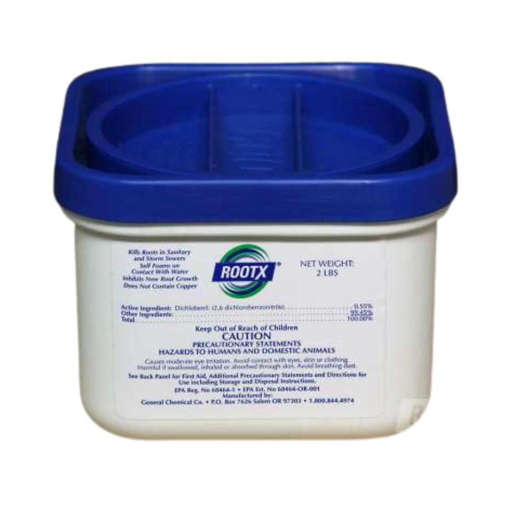
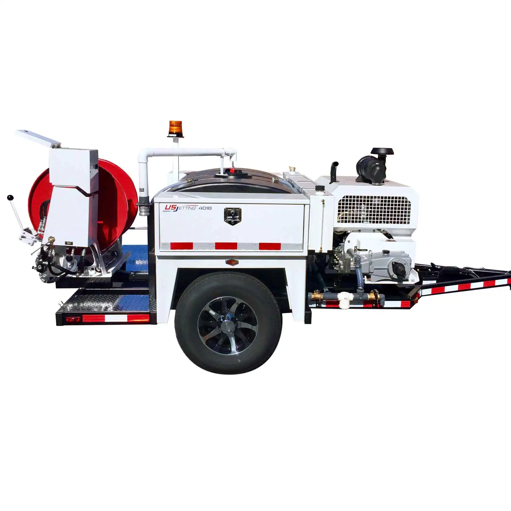
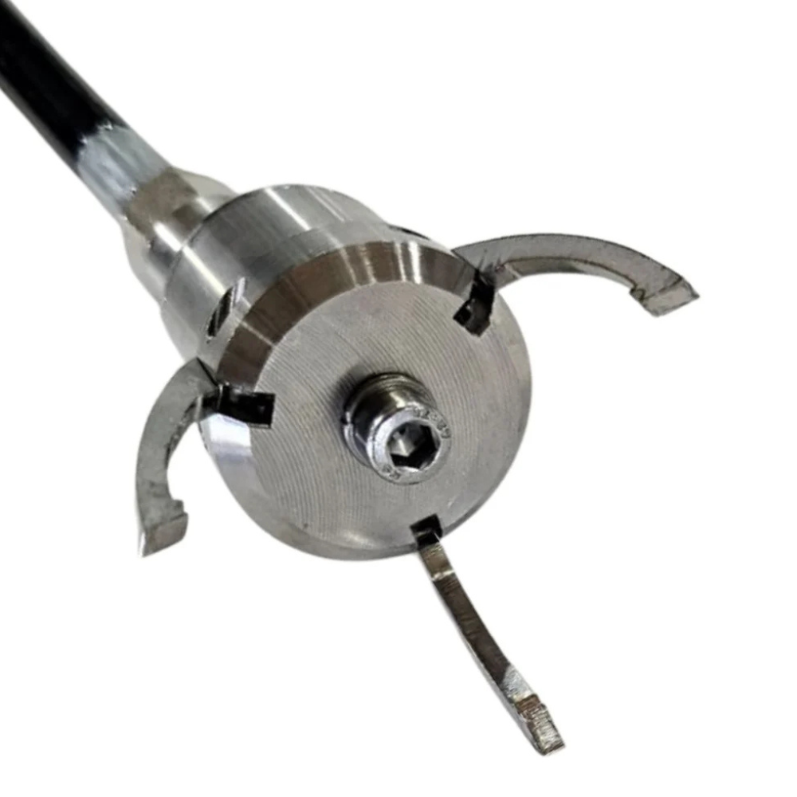
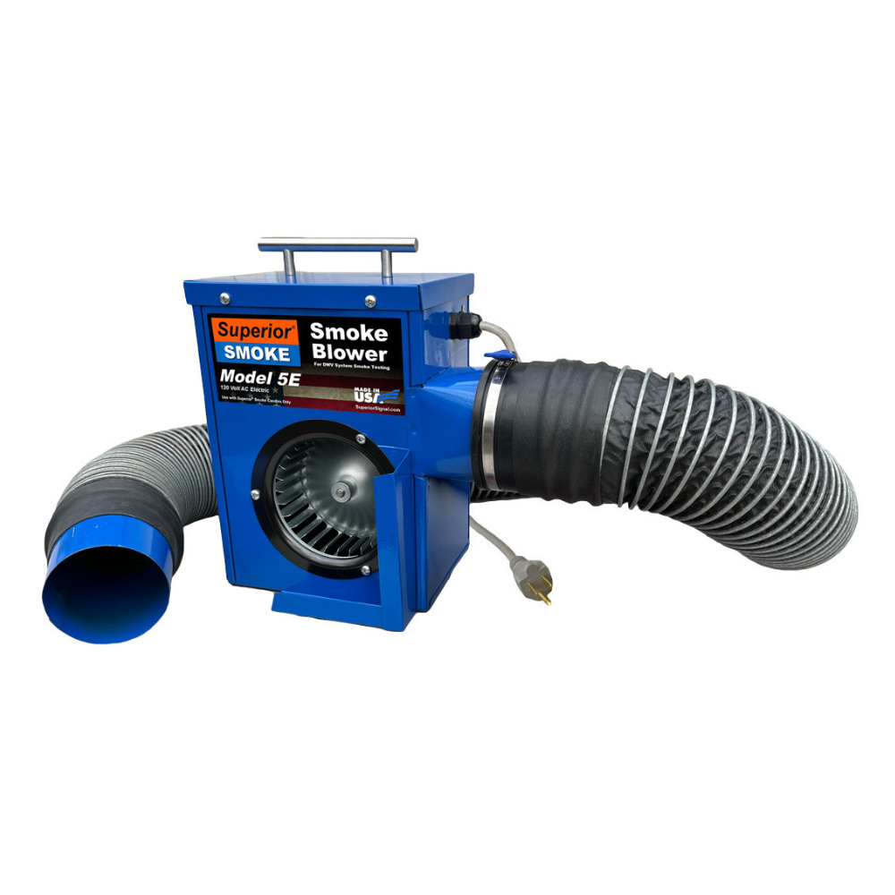
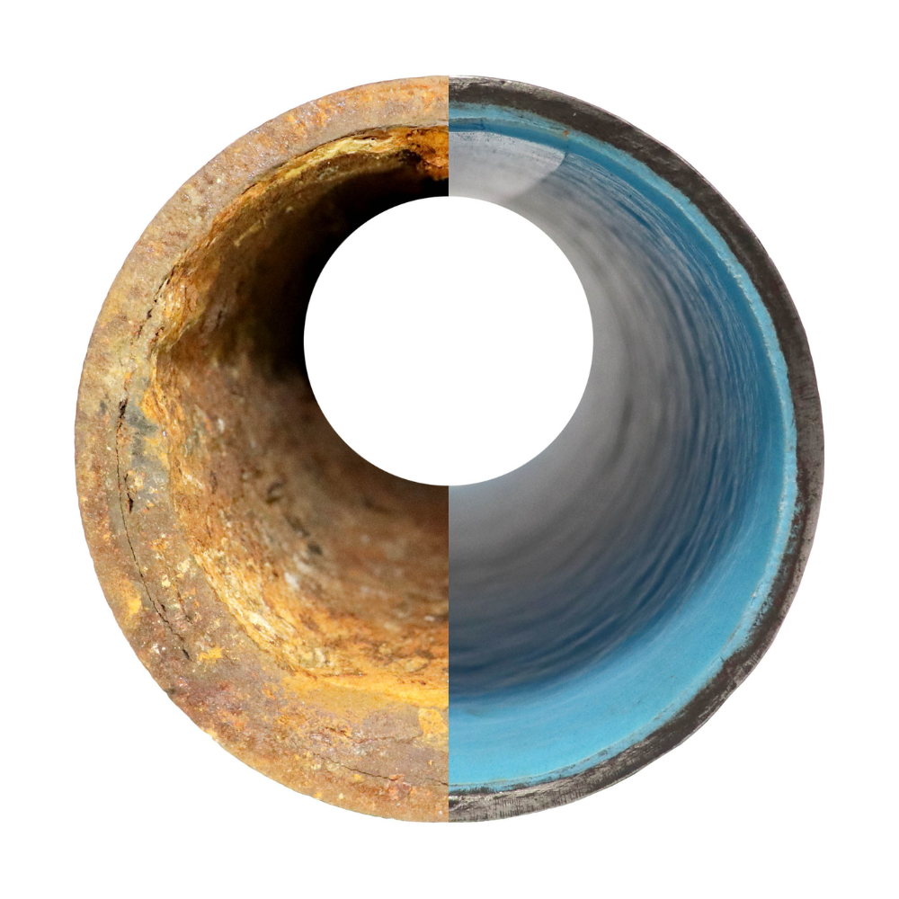
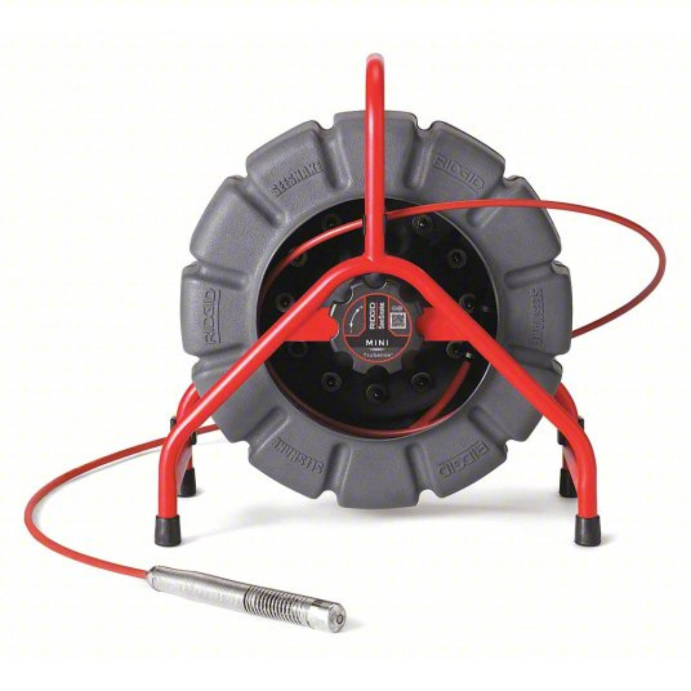
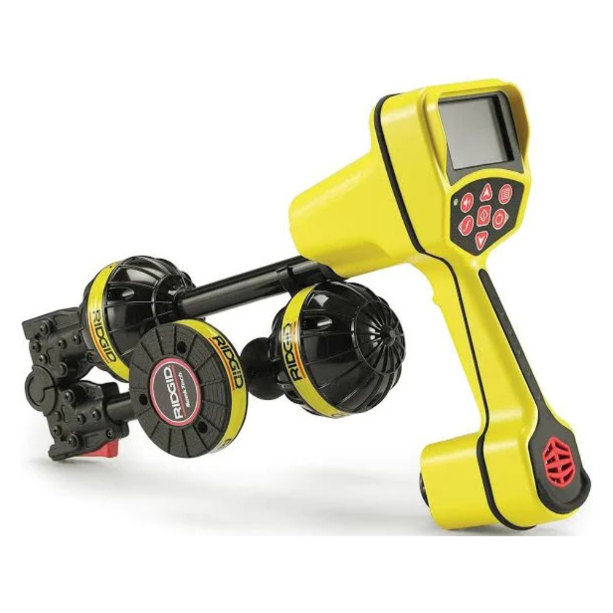
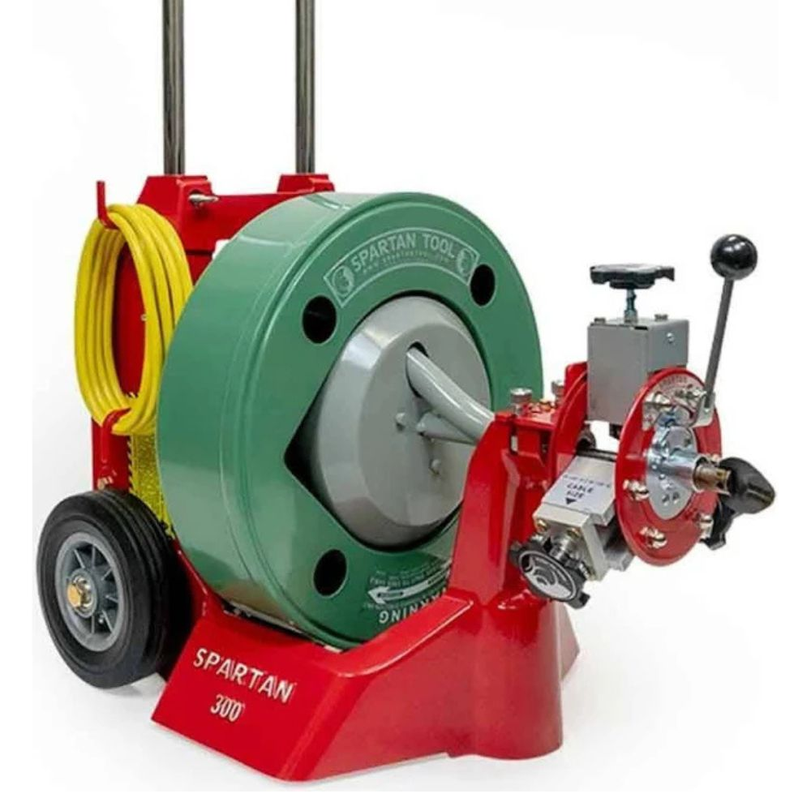

Root X Treatment
Root intrusion is one of the most common — and destructive — causes of drain and sewer failures. Tree roots are naturally drawn to the warmth and moisture inside your pipes, and once they get in, they grow rapidly, causing severe blockages and even pipe collapse.
Our Root X treatment uses a powerful dichlobenil herbicide foam that is injected directly into your pipes. The foam kills invasive roots on contact and coats the pipe walls to prevent regrowth — all without harming the surrounding trees or landscaping.
- Kills root intrusions without damaging nearby trees
- Prevents regrowth for long-term protection
- Safe for all pipe materials
- Can be combined with hydro flushing for maximum results
- Residential and commercial applications

Hydro Flush
Unlike traditional snaking which only punctures a hole through a blockage, our high-pressure hydro flushing thoroughly cleans the entire interior of your pipes. A specialized nozzle propels water at pressures up to 4,000 PSI, blasting away grease, mineral scale, roots, and debris.
The result is pipes that are clean from wall to wall — not just cleared, but truly restored to near-new flow capacity. Hydro flushing is the gold standard for preventive drain maintenance and for tackling the toughest clogs.
- Clears grease, scale, roots, and debris completely
- Restores full pipe diameter and flow capacity
- Safe for all pipe types including older clay and cast iron
- Ideal for kitchen drains, main lines, and commercial grease traps
- Often paired with camera inspection for complete diagnostics

Object Removal
Foreign objects in drains are more common than you'd think — toys flushed by curious children, jewelry lost down a sink, construction debris left in pipes, or sections of collapsed pipe blocking the line. Each situation requires a different approach.
Our technicians use specialized retrieval tools, camera guidance, and years of hands-on experience to safely extract objects without causing additional damage to your plumbing. We've seen it all, and we can get it out.
- Toys, jewelry, and household items from drains
- Construction debris and collapsed pipe sections
- Camera-guided retrieval for precision and safety
- Minimizes risk of additional pipe damage during extraction

Smoke Testing
Smoke testing is one of the most effective ways to find hidden problems in your sewer system. By introducing non-toxic smoke into the drain lines under light pressure, we can quickly identify exactly where leaks, breaks, illegal connections, and defects exist.
This technique can reveal problems that camera inspections sometimes miss, especially in complex systems with multiple junctions. It's fast, non-destructive, and gives you a complete picture of your sewer system's integrity.
- Non-toxic smoke — safe for people, pets, and property
- Identifies hidden leaks and sewer gas escape points
- Detects illegal cross-connections and improper tie-ins
- Faster and more comprehensive than camera-only diagnostics
- Commonly used for pre-purchase sewer inspections

Liner Installation
Traditional sewer line repair means excavating your yard, driveway, or landscaping — a disruptive, expensive process that can take days and leave your property torn up. Our trenchless liner installation changes all of that.
We insert a flexible liner coated with epoxy resin into the damaged pipe, then inflate it to press against the pipe walls. Once cured, it forms a seamless, jointless new pipe within the old one — stronger than the original and resistant to root intrusion, corrosion, and cracking for decades to come.
- No excavation required — no torn-up yard or driveway
- Restores full flow capacity and structural integrity
- Eliminates joint failures and root re-intrusion points
- Works in pipes 2" to 24" diameter
- Completed in as little as one day
- 10-year warranty on trenchless lining repairs

Sewer Line Inspection
Guesswork is expensive. Our high-definition sewer camera inspection gives you a real-time visual tour of your entire sewer system, revealing exactly what's going on underground without a single shovel in the ground.
We document everything on video and provide you with a clear report of our findings — the location, nature, and severity of any issues. Whether you're buying a home, investigating a persistent problem, or planning renovations, a camera inspection is the smart first step.
- HD real-time video of your entire sewer system
- Identifies root intrusions, cracks, offset joints, and blockages
- Locates exact depth and distance of problems
- Essential for real estate transactions and pre-purchase inspections
- Full video documentation provided

Pipe Locating
Before any excavation, renovation, or underground work, you need to know exactly where your pipes are. Hitting an undiscovered sewer or drain line during digging can turn a simple project into an expensive emergency.
We locate our camera inside the pipe and are able to mark it out above ground, giving you a precise location without any guesswork.
- Precise location and depth mapping of underground pipes
- Essential before digging, construction, or landscaping
- Works with sewer, drain, and lateral lines
- Paired with camera inspection for complete system mapping
- Fast turnaround — most locations completed same day

Snaking & Drain Cleaning
When a drain is slow or completely blocked, our comprehensive snaking service gets things flowing again fast. We carry a full range of snaking equipment from compact hand-held machines for bathroom sinks to large power snakes for main sewer lines and floor drains.
Every drain cleaning job is backed by our 30-day guarantee. If your drain clogs again within 30 days of our service, we return at no charge — because we stand behind our work.
- Kitchen sinks, bathroom drains, floor drains
- Tub, shower, and laundry line clearing
- Main sewer line and cleanout access
- Grease, hair, soap buildup, and soft blockages
- 30-day guarantee — if it comes back, so do we
